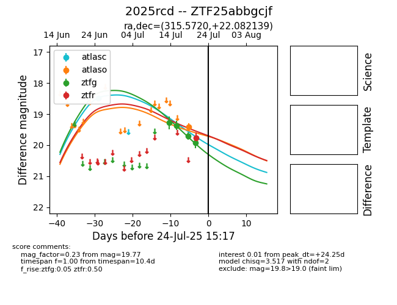

Target 2025rcd at 2025-07-24 15:17, see:
FINK: fink-portal.org/2025rcd
Lasair: lasair-ztf.lsst.ac.uk/objects/2025rcd
ALeRCE: alerce.online/object/2025rcd
TNS: wis-tns.org/object/2025rcd
YSE: ziggy.ucolick.org/yse/transient_detail/2025rcd
alt names
ZTF25abbgcjf (ztf,fink)
2025rcd (tns,yse)
coordinates:
equatorial (ra, dec) = (315.5720,+22.08214)
galactic (l, b) = (68.7613,-15.91849)
photometry
last atlasc=18.48, atlaso=19.41, ztfg=19.92, ztfr=19.77
1 atlasc, 1 atlaso, 4 ztfg, 1 ztfr detections
